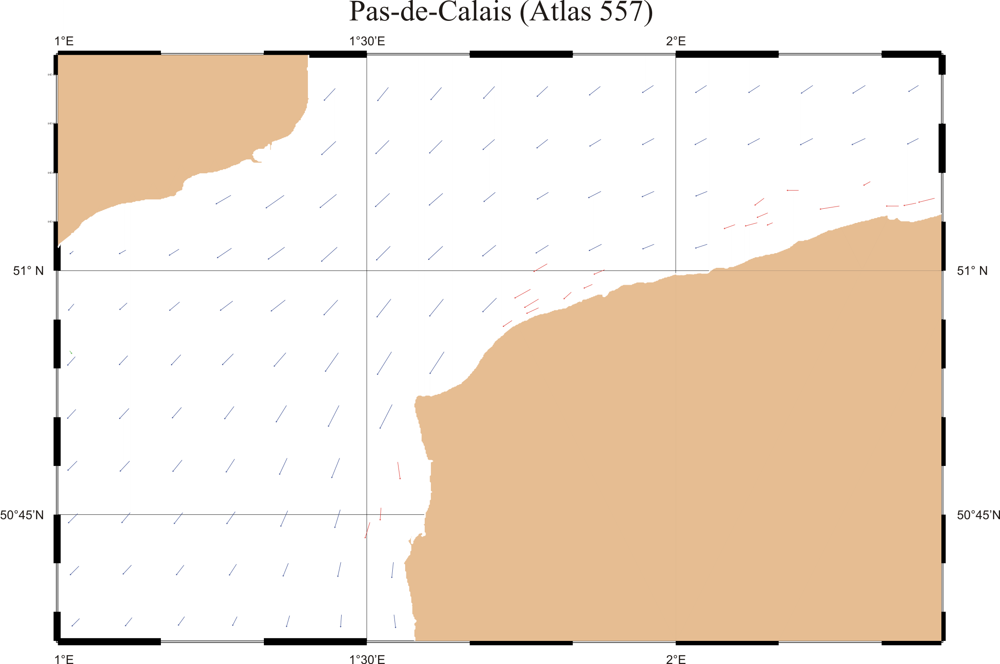
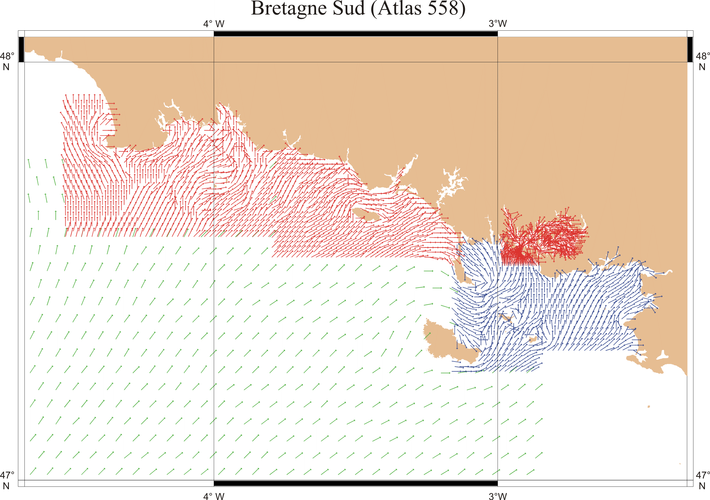
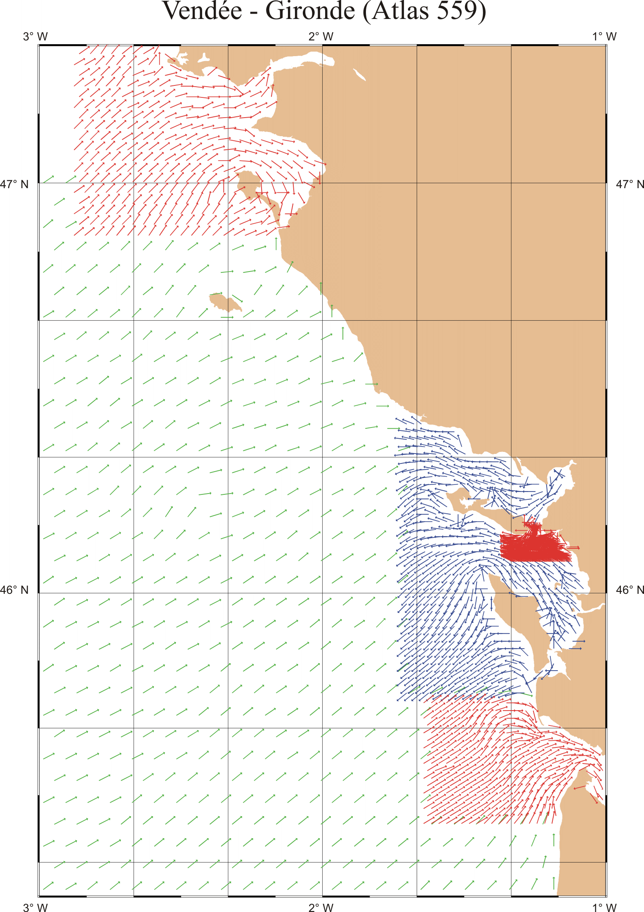
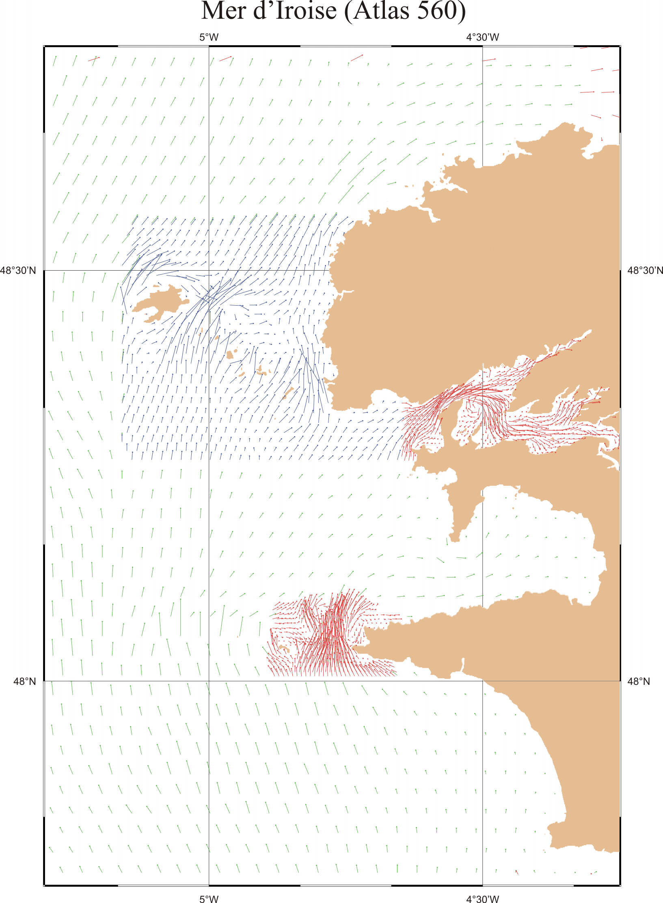
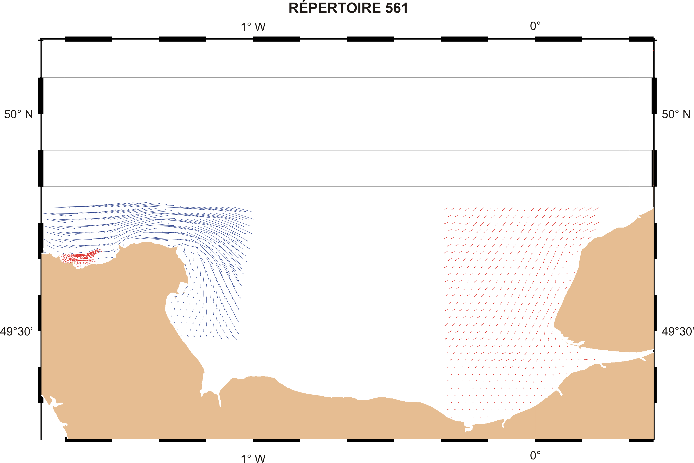
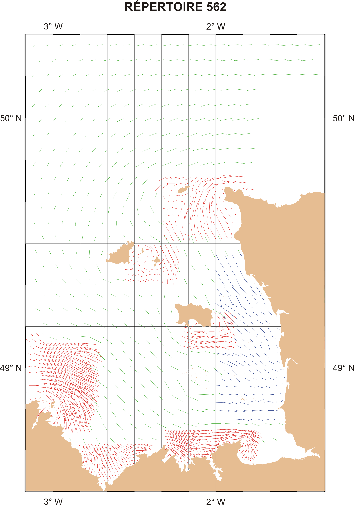
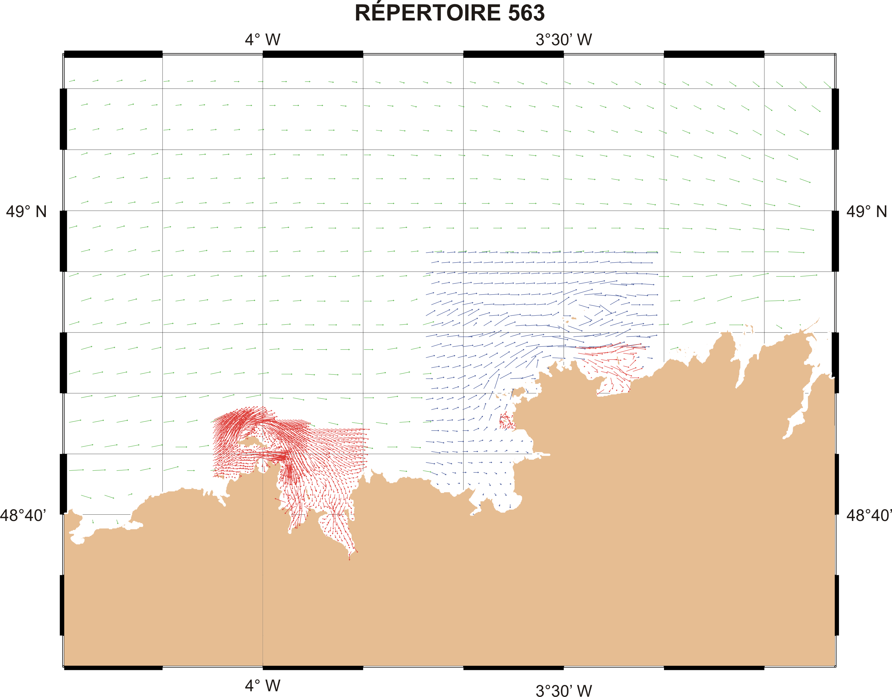
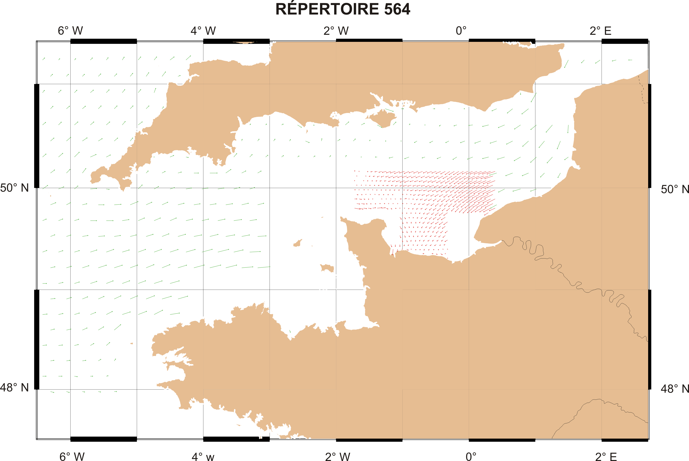
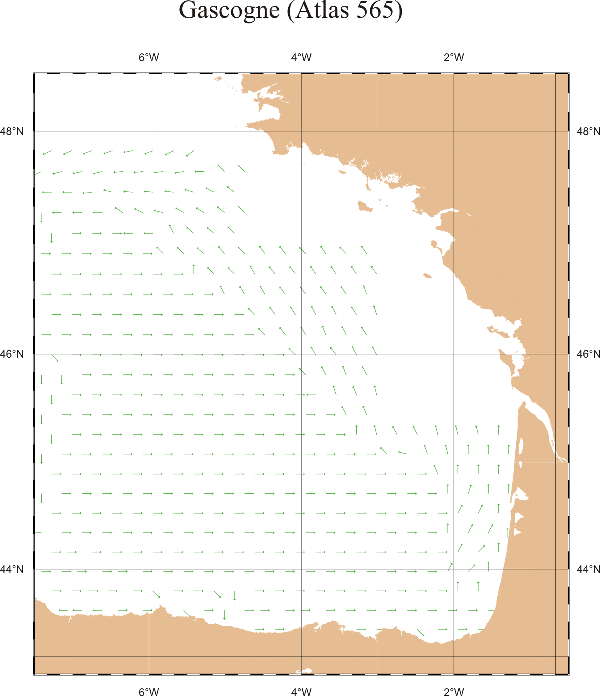

Harmonics
Download the harmonics needed for the plugin as a zip file from here:
https://www.schnaps.fr/HarmonicsV10.zip
Or as a rar file from here:
https://www.schnaps.fr/Harmonics_V10.rar
Unzip to a folder on your computer. Use the "Select Directory" button to choose that directory.
Atlases
Courants de marée français fournis par le SHOM (Ports de référence)
French tidal currents supplied by SHOM (Reference ports)
|  |
 |
 |
| this |
 |
 |
|  |
 |
 |